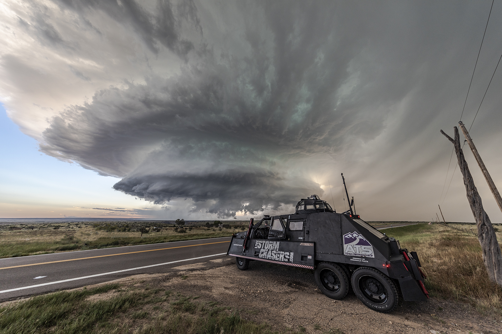
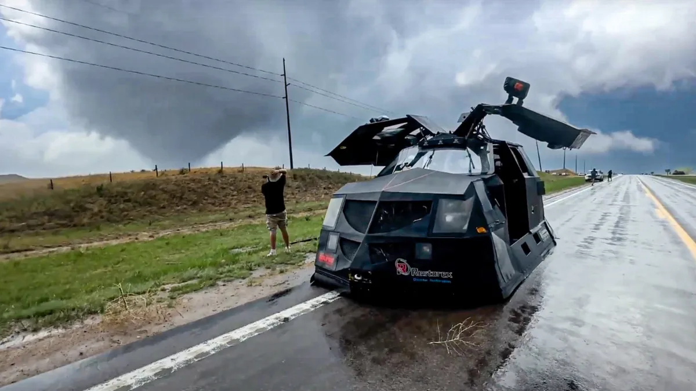

Автопарк перехватчиков
Бронированные монстры, созданные для того, чтобы смотреть буре в глаза.

TIV-2
Броня: Алюминий, кевлар, сталь, поликарбонат.
Особенности: Гидравлические "юбки" опускаются до земли, предотвращая попадание ветра под днище. Оснащен якорями.

Dominator 3
Броня: Толстый сварной стальной панцирь.
Особенности: Построен на базе Ford Super Duty. Имеет пневмоподвеску для максимального прижатия к дороге.

Скауты (Mobile Mesonet)
Броня: Заводская + защитные решетки.
Особенности: Легкие и маневренные автомобили с метеомачтами на крыше. Их задача — маневрировать по краям шторма и собирать данные.
⚠️ Памятка по выживанию при торнадо
- В здании: Спуститесь в подвал или укрытие. Если его нет — спрячьтесь в комнате без окон в центре здания (ванная, кладовка) на нижнем этаже.
- В автомобиле: НИКОГДА не пытайтесь обогнать торнадо. Если укрытие далеко, остановитесь, пристегнитесь и опустите голову ниже уровня окон, прикрыв ее руками.
- На открытой местности: Найдите самое низкое место (канава, овраг), лягте лицом вниз и закройте голову руками. Берегитесь летящих обломков!
- Чего делать НЕЛЬЗЯ: Не прячьтесь под мостами и путепроводами! Они работают как аэродинамическая труба, ускоряя ветер и засасывая мусор.